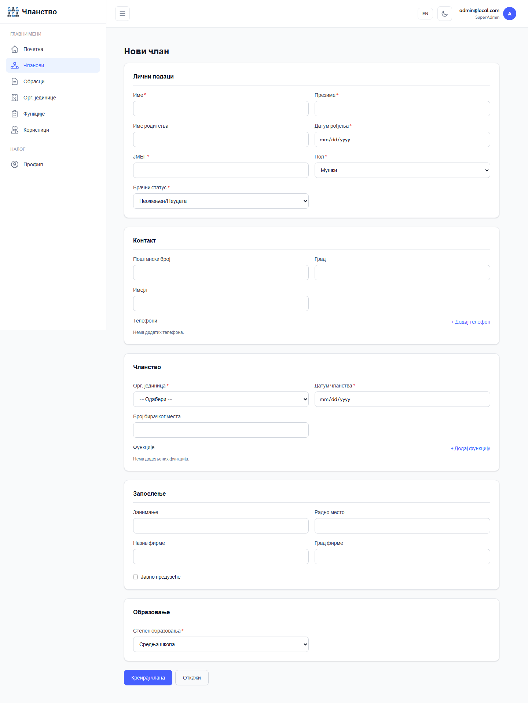
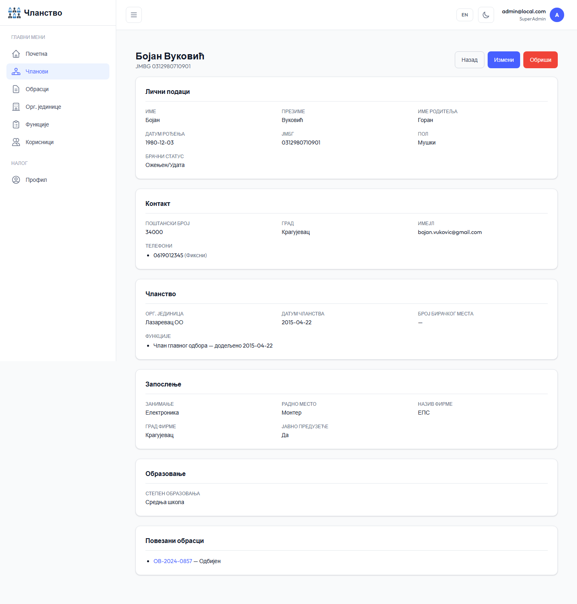
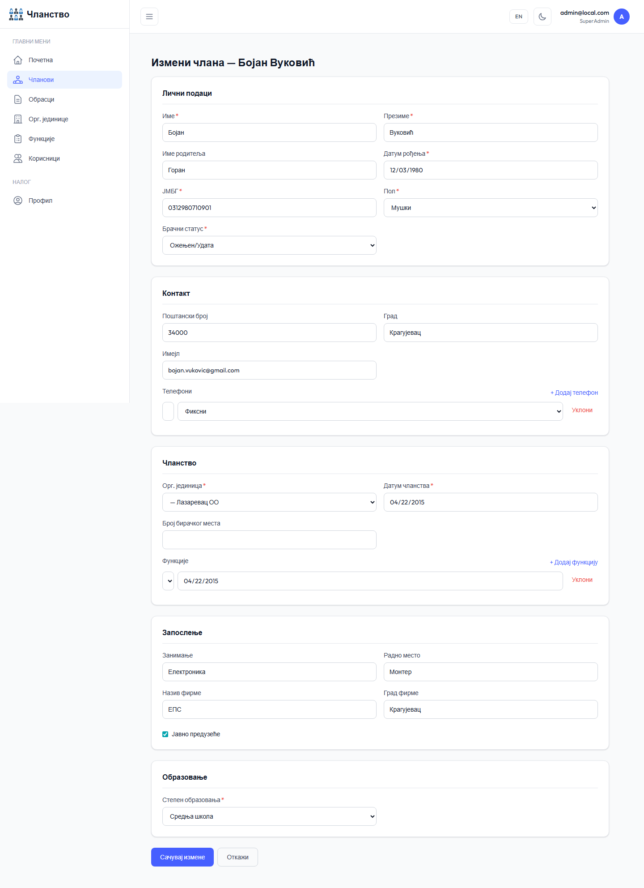
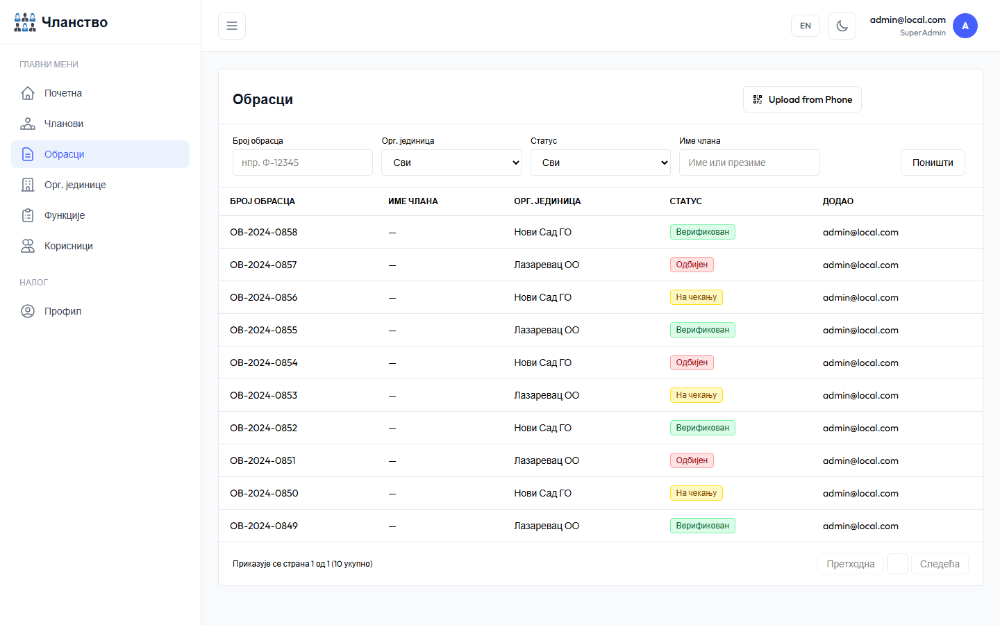
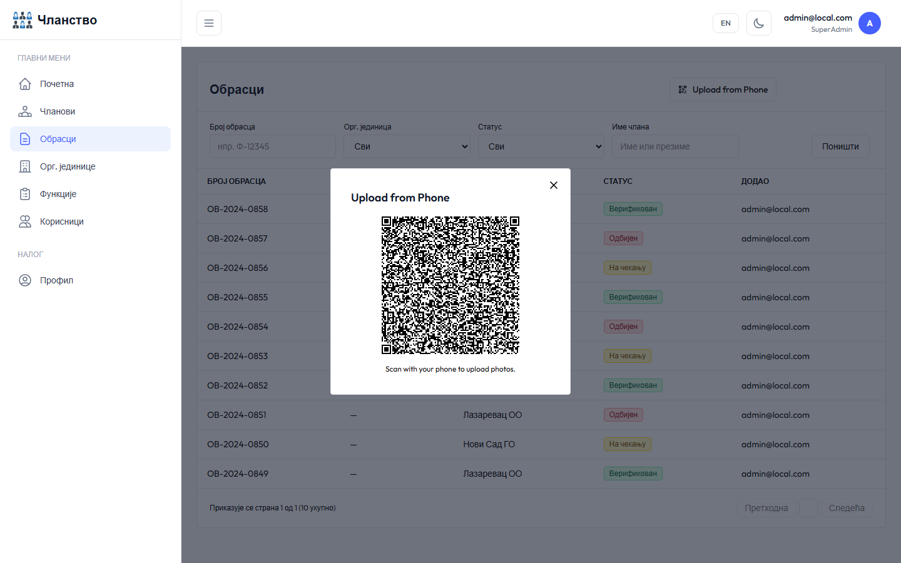
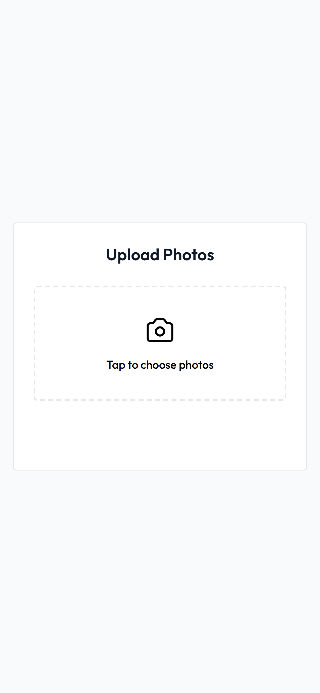
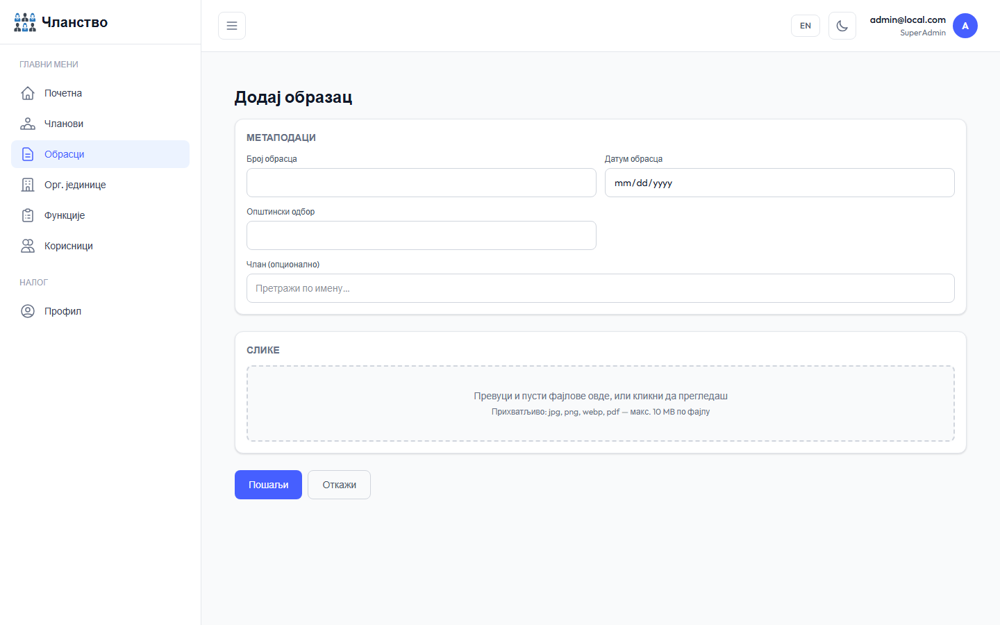
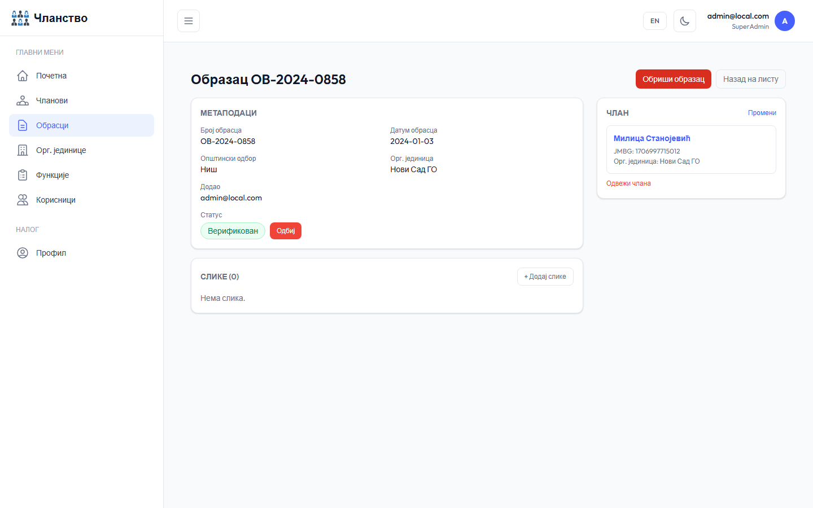
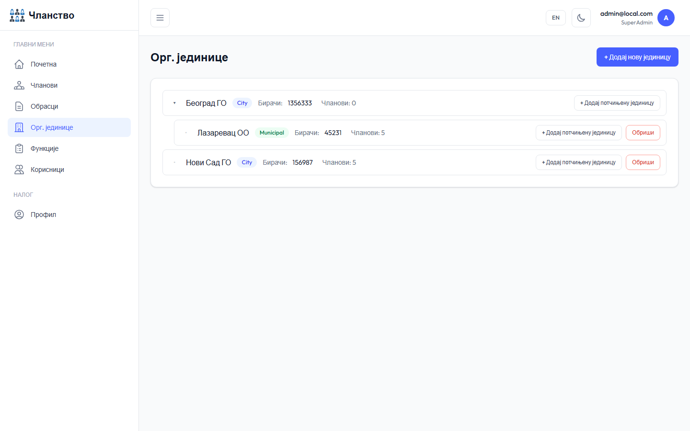
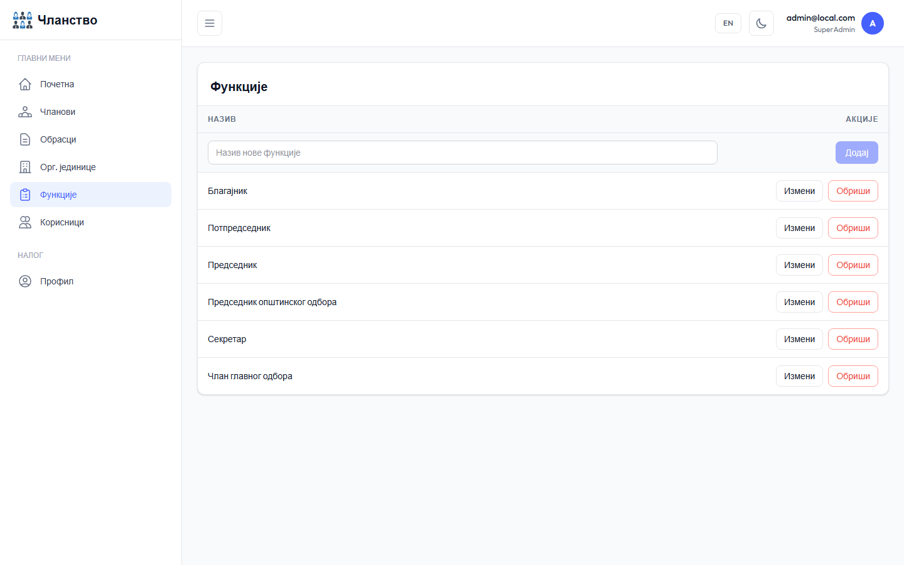

Запослење — назив предузећа, радно место, занимање.
Напомена: ЈМБГ мора бити јединствен у систему. Уколико унесете ЈМБГ који већ постоји, систем ће вас обавестити.

Слика 4 — Форма за додавање новог члана
5
Детаљи члана
Страница детаља приказује све информације о члану подељене у секције. Са ове странице можете измeнити или обрисати члана, као и прегледати повезане обрасце.
Одељак Повезани обрасци приказује листу образаца овог члана са статусима.
Кликом на образац отварате детаљни приказ тог обрасца.
Брисање члана је трајно — потврдите акцију у дијалогу.

Слика 5 — Детаљни приказ члана
6
Измена члана
Форма за измену члана идентична је форми за додавање — сви подаци су учитани и могу се уредити.
Телефони се додају и уклањају директно у форми.
Функције се такође могу додавати и уклањати.
Кликните Сачувај да потврдите измене или Откажи за повратак.

Слика 6 — Форма за измену члана
7
Листа образаца
Страница Обрасци приказује све скениране приступнице са могућношћу филтрирања по броју обрасца, статусу, организационој јединици и имену члана.
Статуси: На чекању, Верификовано, Одбијено.
Дугме Слање са телефона отвара QR код за брзо слање са мобилног уређаја.
Дугме Додај образац отвара форму за ручни унос.

Слика 7 — Листа образаца
8
Слање са телефона — QR код
Кликом на дугме Слање са телефона на страници образаца отвара се искачући прозор са QR кодом.
Скенирајте QR код камером телефона.
Отвориће се мобилна страница за слање фотографија (описана у поглављу 9).
QR код је везан за вашу сесију и важи до одјаве.
Савет: Користите ову функцију када желите брзо да фотографишете попуњену приступницу директно телефоном без ручног преноса фајлова.

Слика 8 — Искачући прозор са QR кодом
9
Мобилни унос фотографија
Скенирањем QR кода из апликације (поглавље 8) отвара се ова страница на телефону. Намењена је брзом слању фотографија попуњених приступница.
Тапните на поље са иконом камере да одаберете фотографије из галерије или да сликате.
Можете одабрати више фотографија одједном.
Кликните Upload да пошаљете фотографије у систем.
По успешном слању приказује се порука потврде — страницу можете затворити.
Напомена: Веза са QR кода важи до одјаве са десктоп апликације. Ако линк не ради, генеришите нови QR код.

Слика 9 — Мобилна страница за слање фотографија
10
Додавање обрасца
Форма за унос обрасца омогућава учитавање скенираних приступница са рачунара.
Унесите број обрасца, датум и општински одбор.
Опционо повежите образац са постојећим чланом претрагом по имену.
Превуците и пустите фотографије или кликните зону за одабир фајлова.
Подржани формати: JPG, PNG, WEBP, PDF — максимум 10 MB по фајлу.
Редослед слика можете променити превлачењем.

Слика 10 — Форма за додавање обрасца
11
Детаљи обрасца
Страница детаља обрасца приказује метаподатке, галерију слика и повезаног члана.
Верификација / Одбијање — администратори могу изменити статус обрасца.
Галерија — кликом на слику отвара се приказ преко целог екрана са навигацијом стрелицама.
Повезани члан — у десном панелу видите члана или можете да повежете/промените члана.
Администратори могу додавати и брисати слике.

Слика 11 — Детаљни приказ обрасца
12
Организационе јединице
Страница Орг. јединице приказује хијерархијску структуру организације у облику стабла.
Јединице су организоване по нивоима: Град → Општини.
SuperAdmin може додавати, уређивати и брисати јединице.
Поље Број гласача служи за израчунавање процента чланства на почетној страни.

Слика 12 — Стабло организационих јединица
13
Функције
Страница Функције омогућава управљање листом функција које се додељују члановима.
Унесите назив функције у поље на врху табеле и кликните Додај.
Кликните Измени на реду да промените назив функције.
Функција која је додељена члановима не може се обрисати.

Слика 13 — Управљање функцијама
14
Корисници
Страница Корисници доступна је само SuperAdmin-у и омогућава управљање корисничким налозима.
Додавање нових корисника са е-адресом, улогом и организационом јединицом.